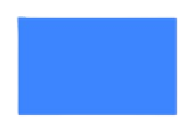
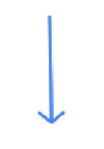
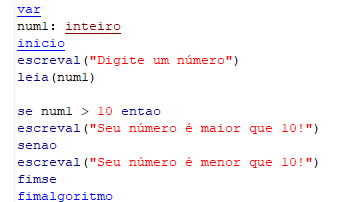

O que é a logica da programação?
A logica da programação é a técnica de encadear pensamentos para atingir determinado objetivo
CONCEITOS
| 1º CONCEITO: ALGORITMO |
- O QUE É UM ALGORITMO? É uma sequência de passos que deve ser seguida para realização de uma tarefa ou solução de um problema. Ele é composto por 3 etapas sendo elas a ENTRADA o PROCESSAMENTO e a SAÍDA
-
QUAIS SÃO AS REGRAS PARA CRIAR UM ALGORITMO?
- Um verbo por frase
- Frases curtas e simples
- Ser objetivo
- Não pode ter sentido dúbio
- Frases simples e entendiveis para pessoas que não são da área
| ENTRADA | PROCESSAMENTO | SAIDA |
|
Aqui é onde o usuário insere os
dados de entrada ou declara as variáveis |
Aqui é onde ocorre o processamento de
informações, como atribuições a variáveis ou processamento de contas matematicas |
Aqui é fim do agoritmo, onde os resultados ou informações sao mostrados como o resultado de uma conta feita anteriormente |
Para ser feta a construção de um algoritmo é necessário
seguir algumas regras, elas são:
| 2º CONCEITO: PSEUDOCÓDIGO |
- O QUE É UM PSEUDOCÓDIGO? Pseudocódigo é a representação simplificada de um algoritmo, que ultiliza a linguagem natural e as regras citadas acima, sem a necessidade de uma sintaxe específica da linguagem de programação. Há dois tipos de Pseudocódigo, a forma de descrição narrativa e o fluxograma
DESCRIÇÃO NARRATIVA
Na descrição narrativa o programador escreve de forma simples e em coluna, uma ação após a outra respeitando as regras do algoritmo, não há ultilização de sintaxes especificas tampouco de palavras ou expressões próprias da programaçãoExemplo:
OBJETIVO: SOMAR UM PRIMEIRO NÚMERO COM UM SEGUNDO NÚMERO
Pegar um primeiro número
Pegar um segundo número
Somar o primeiro número com o segundo número
Mostrar resultado
Observe que em cada frase há somente um verbo e as intruções foram básicas
FLUXOGRAMA
No fluxograma nós temos formas que expressam certas ideias ou comandos, cada forma expressa um tipo de comando, ainda respeitando as regras do algoritmo porém de uma forma mais técnica. Neste exemplo iremos olhar somente as formas mais basicas| FORMA |
Terminal
|
Entrada
Manual de Dados
|

Processamento
|
Decisão
|
Seta de Fluxo
|
Exibir
|
| FUNÇÃO | O terminal é o inicio/fim do Pseudocódigo, é obrigatorio nas duas ocasiões | A entrada manual de dados é onde o usuario insere as variaveis/dados | O processamento é onde ocorre uma conta matemática ou uma variável é atribuida | A decisão é quando o código precisa escolher entre dois caminhos caso algo seja verdadeiro ou falso | A seta de fluxo indica em qual ordem/fluxo o código está seguindo | O exibir exibe algum dado, variável atribuida ou resultado |
Em um exemplo prático nós temos:
OBJETIVO: SOMAR UM PRIMEIRO NÚMERO COM UM SEGUNDO NÚMERO
INICIAR

Número1
Número2
Número1 + Número2
Resultado
FIM
| 3º CONCEITO: TIPOS DE DADO |
- QUAIS SÃO OS TIPOS DE DADOS? Na lógica da programação há variações nos tipos de dados, temos a constante, a variavel e a classificação de um dado
- Constante: São os valores imutaveis, ou seja que nao são possivel de mudar, um exemplo é o π que vale 3,14. Um valor que não varia
- Variável: É um espaço reservado na memória do computador que receberá um nome; um tipo de dado; que ficará armazenado. este valor poderá ser alterado durante a execução do nosso algoritmo
- Tipo de dado: Uma variável pode receber 3 tipos de dados, sendo eles o CARACTER, INTEIRO e o REAL
- Caracter: recebe apenas letras (A - Z)
- Inteiro: recebe apenas números do conjunto inteiro (1, -10, 0, -400 ...)
- Real: recebe apenas números do conjunto real (1,5; -20; 2/5 ...)
| 4º CONCEITO: OPERADORES |
- O QUE SÃO OS OPERADORES? No algoritmo há 3 tipos de operadores, cada classe de operador tem determinada função dentro do código, temos os operadores ARITMÉTICOS, RELACIONAIS e LÓGICOS
Aritméticos
| OPERAÇÃO | SÍMBOLO |
| Adição | + |
| Subtração | - |
| Multiplicação | * |
| Divisão | / |
| Exponenciação | ** |
| atribuição | = |
Relacionais
| FUNÇÃO | SÍMBOLO |
| Igual a | = |
| maior que | > |
| menor que | < |
| maior ou igual a | >= |
| menor ou igual a | <= |
| diferente de | <> ou # |
LÓGICOS
| FUNÇÃO |
| E |
| Ou |
| Nao |
EXEMPLO
| ARITMÉTICO | RELACIONAL | LÓGICO |
|
Número1 + Número2
|
10 > 9 9 = 9 |
9 OR 10 = True |
| 5º CONCEITO: VISUALG |
-
O visuAlg é um aplicativo que tem como função
a criação de pseudocódigos ultilizando uma linguagem
técnica com palavras que expressarão uma ordem,
ultilizando todos os conceitos e regras vistas
nesse site
Neste exemplo veremos apenas 5 códigos - leia
- escreval
- se
- entao
- senao
Leia
O leia é ultilizado para o usuário escrever algo ele também atribuirá uma variavelEscreval
O escreval falará para o código escrever algo na tela, normalmente antecede o LeiaExemplo:

Neste caso declaramos a variável "num1" como inteira, pois ela receberá apenas numeros inteiros. O codigo escreval mostra a mensagem "Digite seu número"; e o leia permite que o usuário escreva um número qualquer e atribui ele a variavel num1; no final é mostrado qual número o usuário digitou por meio do comando escreval
Se
O código Se, assim como no diagrama de blocos ele indica uma decisão, caso algo for verdadeiro ele passará para a próxima linha, caso nao ele pulará para o Fimse (indica o fim do se)Entao
o código entao sempre sucede o codigo se, veja no exemplo abaixo
Neste código o programa irá pedir para o usuário digitar um número, e se o número digitado for maior que 10, entao ele escreverá na tela que o número é maior que 10, caso não for se encerrará o código
Senao
O comando senao é ultilizado caso o usuário queira programar algo se a a informação do se for falsa. Veja no exemplo
Esta é a continação do código anterior, porém agora caso o numero nao for maior que 10, ou seja, caso o numero for menor que 10, entao aparecerá na tela que o número é menor que 10